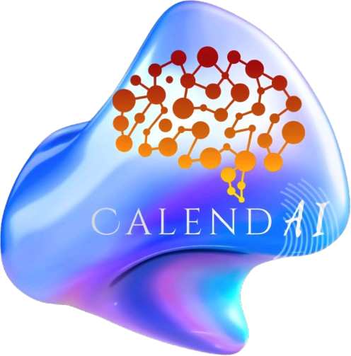
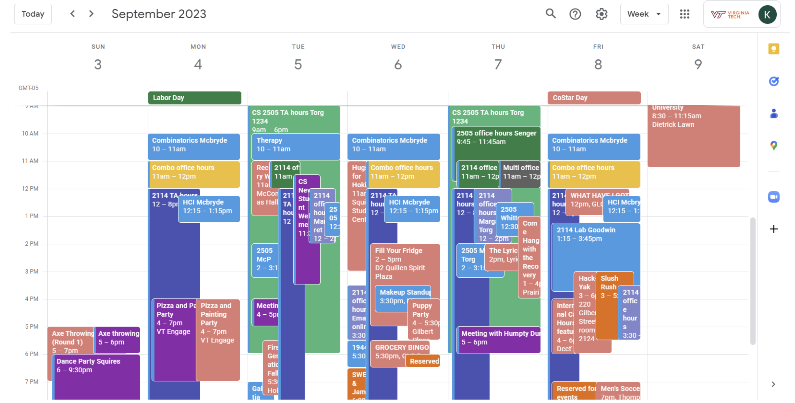
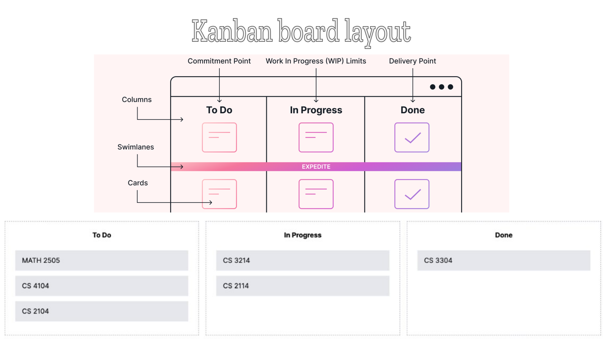
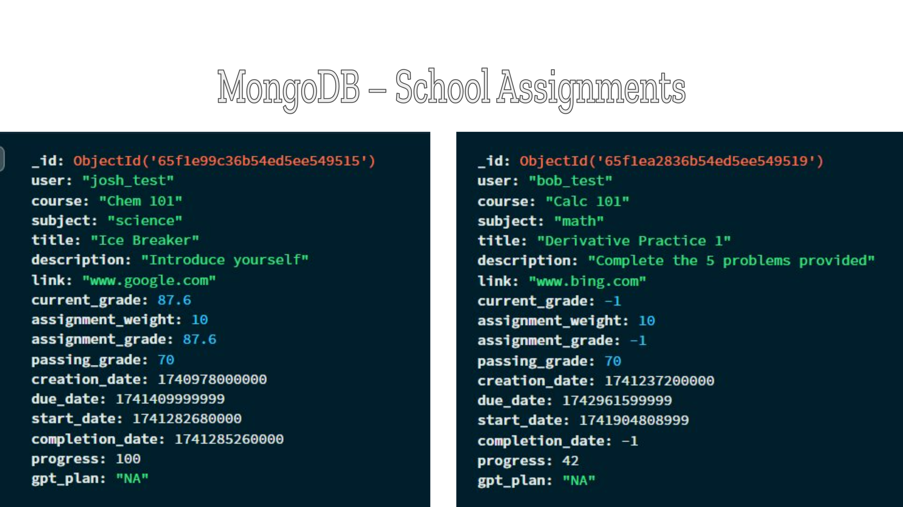
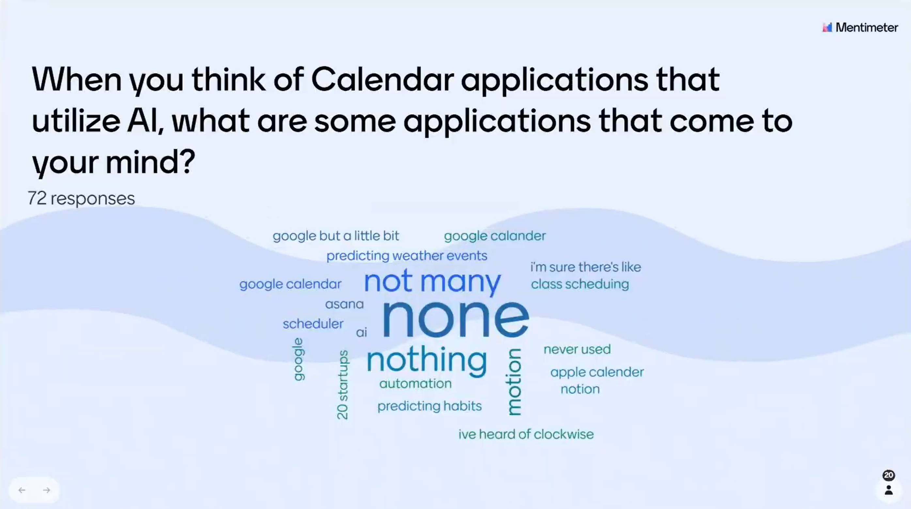
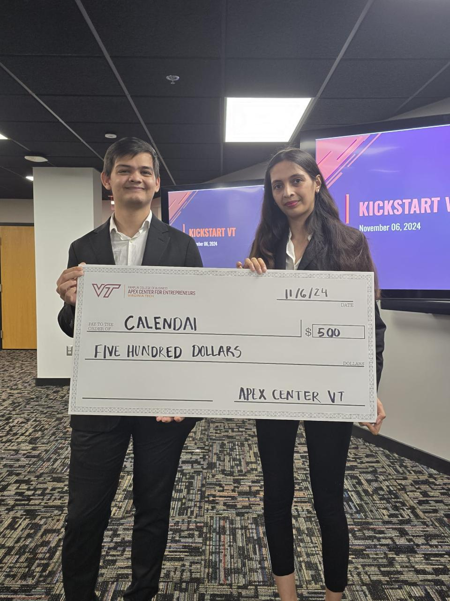

Project Exploration: CalendAI
Role: Principal Developer
While pursuing a Computer Science degree with a specialization in Artificial Intelligence (AI) and Machine Learning (ML), I spearheaded CalendAI, an innovative initiative under the mentorship of Dr. Andrew Kulak. Created to transform productivity through intelligent scheduling, CalendAI initially targeted students but quickly revealed broad applicability extending into professional environments and everyday productivity scenarios.
Why CalendAI Matters: Filling a Crucial Productivity Gap
Modern life—academic or professional—is defined by countless responsibilities, competing priorities, and a constant struggle for effective time management. Traditional calendar apps lack intelligence, adaptability, and seamless integration, creating significant productivity hurdles:

- Inefficient Scheduling: Users waste valuable time manually adjusting events and managing competing priorities.
- Limited Integration: Fragmented workflows due to calendars that cannot seamlessly connect to professional or academic platforms.
- No Intelligent Adaptation: Standard tools fail to learn from user behaviors, missing opportunities for proactive, adaptive scheduling.
- Information Overload: Users become overwhelmed by irrelevant reminders rather than actionable, prioritized tasks.
CalendAI directly addresses these universal challenges, creating an intuitive, personalized, and intelligent productivity solution suitable for diverse users.
Beyond Academia: CalendAI’s Multimodal Potential
While CalendAI was initially crafted with students in mind, its robust multimodal integration makes it ideal for professionals across various industries.

Working Professionals
- Automated Meeting Scheduling: AI-driven scheduling instantly identifies optimal meeting times, integrating seamlessly with workplace tools such as Slack, Teams, and Outlook.
- Prioritized Task Management: Adaptive algorithms highlight critical tasks, helping users manage workloads intelligently based on real-time data and priorities.
- Reduced Burnout: Intelligent task prioritization and workload balancing reduce stress and burnout, promoting overall well-being and productivity.
Entrepreneurs and Freelancers
- Resource Optimization: CalendAI intelligently suggests optimal task sequences, enhancing productivity and freeing entrepreneurs from micromanagement.
- Seamless Multitasking: Multimodal capabilities manage diverse obligations—all within one cohesive interface.
Enterprises and Organizations
- Enhanced Team Coordination: Adaptive, AI-based team scheduling ensures smoother collaboration and greater productivity.
- Advanced Analytics: Analytics insights help leaders understand workflow bottlenecks and make informed decisions.
Technical Highlights: The Innovation Behind CalendAI
CalendAI’s technical backbone is designed for scalability, versatility, and ease of use, making its multimodal expansion natural and efficient:
- AI-Infused Scheduling Integration: Built with Express.js, MongoDB, and Prisma, CalendAI supports seamless data exchange with platforms like Canvas, Slack, Zoom, and Outlook.

- Advanced Machine Learning Techniques: Leveraging ML, the system dynamically analyzes user behavior to provide personalized recommendations via:
- Behavioral Prediction: Automatically adjusts entries based on user habits.
- Task Prioritization Engine: Dynamically ranks tasks for optimized productivity.
- Intuitive User Experience: Designed with React.js, its minimalist UI—including interactive Kanban-style boards—ensures clarity and ease of use.
Empirical Validation and User-Centric Design
Over 70 users participated in extensive testing, providing invaluable feedback that shaped CalendAI’s final design. Rigorous evaluations and user feedback loops ensured the product’s adaptability and responsiveness across diverse user groups.

Recognition: KickStart VT Seed Grant Winner
CalendAI’s innovative potential has been formally recognized:
KickStart VT Seed Grant Winner – CalendAI
Apex Systems Center for Innovation and Entrepreneurship, November 2024

Being selected as a KickStart VT Seed Grant Winner validated CalendAI’s innovative approach to productivity and supports further development within a vibrant entrepreneurial community.
Why CalendAI Is Essential: Returning to Our Core Vision
CalendAI addresses productivity pain points across academic institutions, workplaces, entrepreneurial ventures, and everyday life:
- Personalization at Scale: AI-driven adaptability ensures a tailored experience for every user.
- Reducing Cognitive Load: Automating scheduling tasks lets users focus on strategic and creative endeavors.
- Universality and Scalability: Its multimodal integration provides significant productivity improvements in any context.
CalendAI’s innovation represents a fundamental improvement in managing time, energy, and well-being—underscoring the critical need for intelligent scheduling solutions.
Conclusion: The Transformative Potential of CalendAI
CalendAI exemplifies interdisciplinary innovation by seamlessly integrating AI, human-computer interaction, and practical usability to revolutionize productivity. Whether empowering students or streamlining professional workflows, CalendAI transforms everyday productivity into extraordinary outcomes.
Contact & Connect with CalendAI
Email: kinjalpandey@vt.edu
Location: Blacksburg, Virginia
Phone: 737-320-4973
LinkedIn: Kinjal Pandey
GitHub: kinpanvt
Discord: Join Our Community
Stack Overflow: Kinjal Pandey